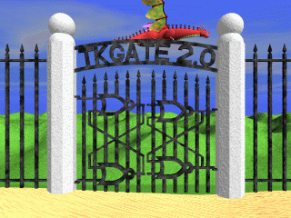

|  | TKGate 2.0Copyright (C) 1987-2007 by Jeffery P. Hansen This program is free software; you can redistribute it and/or modify it under the terms of the GNU General Public License as published by the Free Software Foundation; either version 2 of the License, or (at your option) any later version. This program is distributed in the hope that it will be useful, but WITHOUT ANY WARRANTY; without even the implied warranty of MERCHANTABILITY or FITNESS FOR A PARTICULAR PURPOSE. See the GNU General Public License for more details. You should have received a copy of the GNU General Public License along with this program; if not, write to the Free Software Foundation, Inc., 675 Mass Ave, Cambridge, MA 02139, USA. |
TkGate is a graphical editor and event-driven simulator for digital
circuits with a tcl/tk-based interface. Supported circuit elements
include basic gates (AND, OR, etc.), tri-state gates, adders, multipliers,
registers, memories and mos transistors. Hierarchical design is also
supported with support for user defined modules. Save files are based
on the Verilog netlist format.